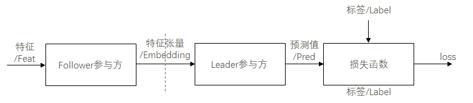
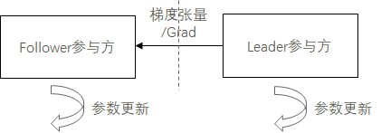
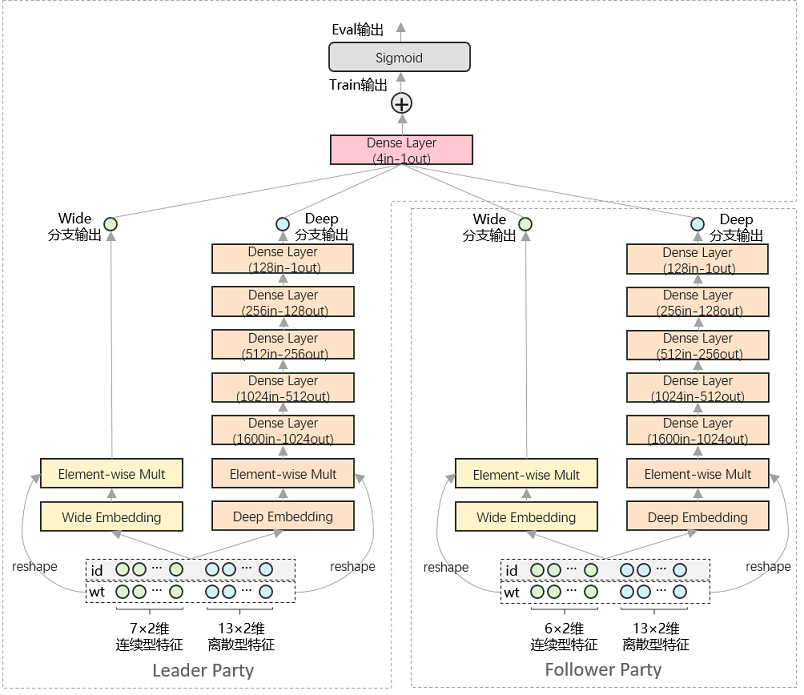

纵向联邦学习模型训练 - Wide&Deep推荐应用¶

概述¶
MindSpore Federated提供基于拆分学习（Split Learning）的纵向联邦学习基础功能组件。
纵向FL模型训练场景：包括前向传播和后向传播/参数更新两个阶段。
前向传播：经数据求交模块处理参数方数据，配准特征信息和标签信息后，Follower参与方将本地特征信息输入前级网络模型，将前级网络模型输出的特征张量，经隐私安全模块加密/加扰后，由通信模块传输给Leader参与方。Leader参与方将收到的特征张量输入后级网络模型，以后级网络模型输出的预测值和本地标签信息为损失函数输入，计算损失值。

后向传播：Leader参与方基于损失值，计算后级网络模型的参数梯度，训练更新后级网络模型的参数，并将与特征张量关联的梯度张量，经隐私安全模块加密/加扰后，由通信模块传输传输给Follower参与方。Follower参与方将收到的梯度张量用于前级网络模型的参数训练更新。

纵向FL模型推理场景：与训练场景的前向传播阶段类似，但直接以后级网络模型的预测值为输出，而无需计算损失值。
网络和数据¶

本样例以Wide&Deep网络和Criteo数据集为例，提供了面向推荐任务的联邦学习训练样例。如上图所示，本案例中，纵向联邦学习系统由Leader参与方和Follower参与方组成。其中，Leader参与方持有20×2维特征信息和标签信息，Follower参与方持有19×2维特征信息。Leader参与方和Follower参与方分别部署1组Wide&Deep网络，并通过交换embedding向量和梯度向量，在不泄露原始特征和标签信息的前提下，实现对网络模型的协同训练。
Wide&Deep网络原理特性的详细介绍，可参考MindSpore ModelZoo - Wide&Deep - Wide&Deep概述 及其研究论文。
数据集准备¶
本样例基于Criteo数据集进行训练和测试，在运行样例前，需参考MindSpore ModelZoo - Wide&Deep - 快速入门，对Criteo数据集进行预处理。
克隆MindSpore ModelZoo代码。
git clone https://gitee.com/mindspore/models.git cd models/official/recommend/Wide_and_Deep
下载数据集。
mkdir -p data/origin_data && cd data/origin_data wget http://go.criteo.net/criteo-research-kaggle-display-advertising-challenge-dataset.tar.gz tar -zxvf criteo-research-kaggle-display-advertising-challenge-dataset.tar.gz
使用此脚本预处理数据。预处理过程可能需要一小时，生成的MindRecord数据存放在data/mindrecord路径下。预处理过程内存消耗巨大，建议使用服务器。
cd ../.. python src/preprocess_data.py --data_path=./data/ --dense_dim=13 --slot_dim=26 --threshold=100 --train_line_count=45840617 --skip_id_convert=0
快速体验¶
本样例以Shell脚本拉起Python程序的形式运行。
参考MindSpore官网指引 ，安装MindSpore 1.8.1或更高版本。
采用安装MindSpore Federated所依赖Python库。
cd federated python -m pip install -r requirements_test.txt
拷贝预处理 后的Criteo数据集至本目录下。
cd tests/st/splitnn_criteo cp -rf ${DATA_ROOT_PATH}/data/mindrecord/ ./
运行示例程序启动脚本。
# 启动leader进程： bash run_vfl_train_socket_leader.sh # 启动follower进程： bash run_vfl_train_socket_follower.sh # 以https加密通信的方式启动leader进程： bash run_vfl_train_leader.sh 127.0.0.1:10087 127.0.0.1:10086 /path/to/data_set True server_cert_password client_cert_password /path/to/server_cert /path/to/client_cert /path/to/ca_cert # 以https加密通信的方式启动follower进程： bash run_vfl_train_follower.sh 127.0.0.1:10086 127.0.0.1:10087 /path/to/data_set True server_cert_password client_cert_password /path/to/server_cert /path/to/client_cert /path/to/ca_cert
查看训练日志
log_local_gpu.txt。INFO:root:epoch 0 step 100/2582 wide_loss: 0.528141 deep_loss: 0.528339 INFO:root:epoch 0 step 200/2582 wide_loss: 0.499408 deep_loss: 0.499410 INFO:root:epoch 0 step 300/2582 wide_loss: 0.477544 deep_loss: 0.477882 INFO:root:epoch 0 step 400/2582 wide_loss: 0.474377 deep_loss: 0.476771 INFO:root:epoch 0 step 500/2582 wide_loss: 0.472926 deep_loss: 0.475157 INFO:root:epoch 0 step 600/2582 wide_loss: 0.464844 deep_loss: 0.467011 INFO:root:epoch 0 step 700/2582 wide_loss: 0.464496 deep_loss: 0.466615 INFO:root:epoch 0 step 800/2582 wide_loss: 0.466895 deep_loss: 0.468971 INFO:root:epoch 0 step 900/2582 wide_loss: 0.463155 deep_loss: 0.465299 INFO:root:epoch 0 step 1000/2582 wide_loss: 0.457914 deep_loss: 0.460132 INFO:root:epoch 0 step 1100/2582 wide_loss: 0.453361 deep_loss: 0.455767 INFO:root:epoch 0 step 1200/2582 wide_loss: 0.457566 deep_loss: 0.459997 INFO:root:epoch 0 step 1300/2582 wide_loss: 0.460841 deep_loss: 0.463281 INFO:root:epoch 0 step 1400/2582 wide_loss: 0.460973 deep_loss: 0.463365 INFO:root:epoch 0 step 1500/2582 wide_loss: 0.459204 deep_loss: 0.461563 INFO:root:epoch 0 step 1600/2582 wide_loss: 0.456771 deep_loss: 0.459200 INFO:root:epoch 0 step 1700/2582 wide_loss: 0.458479 deep_loss: 0.460963 INFO:root:epoch 0 step 1800/2582 wide_loss: 0.449609 deep_loss: 0.452122 INFO:root:epoch 0 step 1900/2582 wide_loss: 0.451775 deep_loss: 0.454225 INFO:root:epoch 0 step 2000/2582 wide_loss: 0.460343 deep_loss: 0.462826 INFO:root:epoch 0 step 2100/2582 wide_loss: 0.456814 deep_loss: 0.459201 INFO:root:epoch 0 step 2200/2582 wide_loss: 0.452091 deep_loss: 0.454555 INFO:root:epoch 0 step 2300/2582 wide_loss: 0.461522 deep_loss: 0.464001 INFO:root:epoch 0 step 2400/2582 wide_loss: 0.442355 deep_loss: 0.444790 INFO:root:epoch 0 step 2500/2582 wide_loss: 0.450675 deep_loss: 0.453242 ...
关闭训练进程。
pid=`ps -ef|grep run_vfl_train_socket |grep -v "grep" | grep -v "finish" |awk '{print $2}'` && for id in $pid; do kill -9 $id && echo "killed $id"; done
深度体验¶
在启动纵向联邦学习训练之前，用户需要和使用MindSpore做普通深度学习训练一样，构造数据集迭代器和网络结构。
构造数据集¶
当前采用模拟流程，即两方读取数据源一样，但训练时，两方只使用部分的特征或标签数据，如网络和数据所示。后续将采用数据接入方法两方各自导入数据。
from run_vfl_train_local import construct_local_dataset
ds_train, _ = construct_local_dataset()
train_iter = ds_train.create_dict_iterator()
构建网络¶
Leader参与方网络：
from wide_and_deep import WideDeepModel, BottomLossNet, LeaderTopNet, LeaderTopLossNet, LeaderTopEvalNet, \
LeaderTeeNet, LeaderTeeLossNet, LeaderTopAfterTeeNet, LeaderTopAfterTeeLossNet, LeaderTopAfterTeeEvalNet, \
AUCMetric
from network_config import config
# Leader Top Net
leader_top_base_net = LeaderTopNet()
leader_top_train_net = LeaderTopLossNet(leader_top_base_net)
...
# Leader Bottom Net
leader_bottom_eval_net = leader_bottom_base_net = WideDeepModel(config, config.leader_field_size)
leader_bottom_train_net = BottomLossNet(leader_bottom_base_net, config)
Follower参与方网络：
from wide_and_deep import WideDeepModel, BottomLossNet
from network_config import config
follower_bottom_eval_net = follower_base_net = WideDeepModel(config, config.follower_field_size)
follower_bottom_train_net = BottomLossNet(follower_base_net, config)
纵向联邦通信底座¶
在训练前首先要启动通信底座，使Leader和Follower参与方组网。详细的API文档可以参考纵向联邦通信器。
两方都需要导入纵向联邦通信器：
from mindspore_federated.startup.vertical_federated_local import VerticalFederatedCommunicator, ServerConfig
Leader参与方通信底座：
http_server_config = ServerConfig(server_name='leader', server_address=config.http_server_address)
remote_server_config = ServerConfig(server_name='follower', server_address=config.remote_server_address)
self.vertical_communicator = VerticalFederatedCommunicator(http_server_config=http_server_config,
remote_server_config=remote_server_config,
compress_configs=compress_configs)
self.vertical_communicator.launch()
Follower参与方通信底座：
http_server_config = ServerConfig(server_name='follower', server_address=config.http_server_address)
remote_server_config = ServerConfig(server_name='leader', server_address=config.remote_server_address)
self.vertical_communicator = VerticalFederatedCommunicator(http_server_config=http_server_config,
remote_server_config=remote_server_config,
compress_configs=compress_configs)
self.vertical_communicator.launch()
构建纵向联邦网络¶
用户需要使用MindSpore Federated提供的类，将自己构造好的网络封装成纵向联邦网络。详细的API文档可以参考纵向联邦训练接口。
两方都需要导入纵向联邦训练接口：
from mindspore_federated import FLModel, FLYamlData
Leader参与方纵向联邦网络：
leader_bottom_yaml_data = FLYamlData(config.leader_bottom_yaml_path)
leader_top_yaml_data = FLYamlData(config.leader_top_yaml_path)
...
self.leader_top_fl_model = FLModel(yaml_data=leader_top_yaml_data,
network=leader_top_train_net,
metrics=self.eval_metric,
eval_network=leader_top_eval_net)
...
self.leader_bottom_fl_model = FLModel(yaml_data=leader_bottom_yaml_data,
network=leader_bottom_train_net,
eval_network=leader_bottom_eval_net)
Follower参与方纵向联邦网络：
follower_bottom_yaml_data = FLYamlData(config.follower_bottom_yaml_path)
...
self.follower_bottom_fl_model = FLModel(yaml_data=follower_bottom_yaml_data,
network=follower_bottom_train_net,
eval_network=follower_bottom_eval_net)
纵向训练¶
纵向训练的流程可以参考概述。
Leader参与方训练流程：
for epoch in range(config.epochs):
for step, item in enumerate(train_iter):
leader_embedding = self.leader_bottom_fl_model.forward_one_step(item)
item.update(leader_embedding)
follower_embedding = self.vertical_communicator.receive("follower")
...
leader_out = self.leader_top_fl_model.forward_one_step(item, follower_embedding)
grad_scale = self.leader_top_fl_model.backward_one_step(item, follower_embedding)
scale_name = 'loss'
...
grad_scale_follower = {scale_name: OrderedDict(list(grad_scale[scale_name].items())[2:])}
self.vertical_communicator.send_tensors("follower", grad_scale_follower)
grad_scale_leader = {scale_name: OrderedDict(list(grad_scale[scale_name].items())[:2])}
self.leader_bottom_fl_model.backward_one_step(item, sens=grad_scale_leader)
Follower参与方训练流程：
for _ in range(config.epochs):
for _, item in enumerate(train_iter):
follower_embedding = self.follower_bottom_fl_model.forward_one_step(item)
self.vertical_communicator.send_tensors("leader", follower_embedding)
scale = self.vertical_communicator.receive("leader")
self.follower_bottom_fl_model.backward_one_step(item, sens=scale)